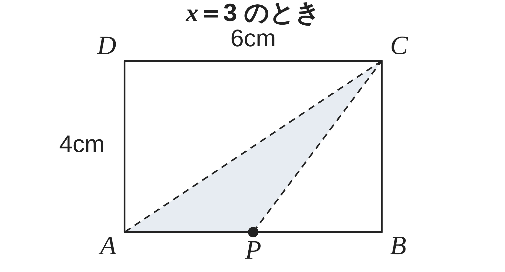
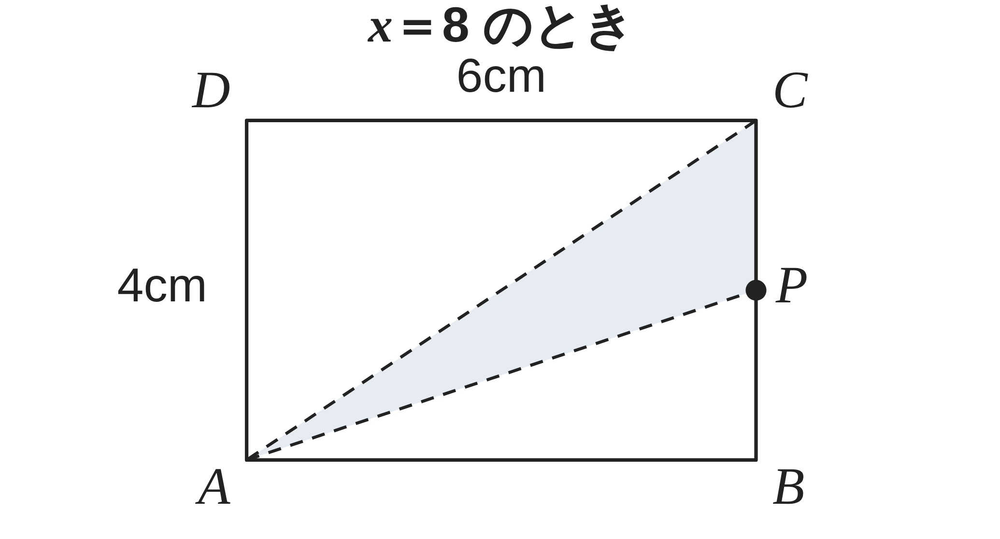
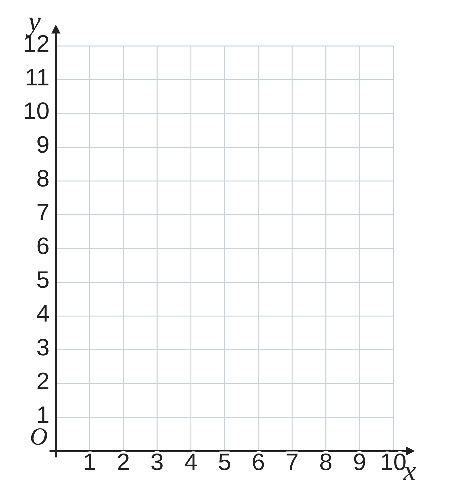
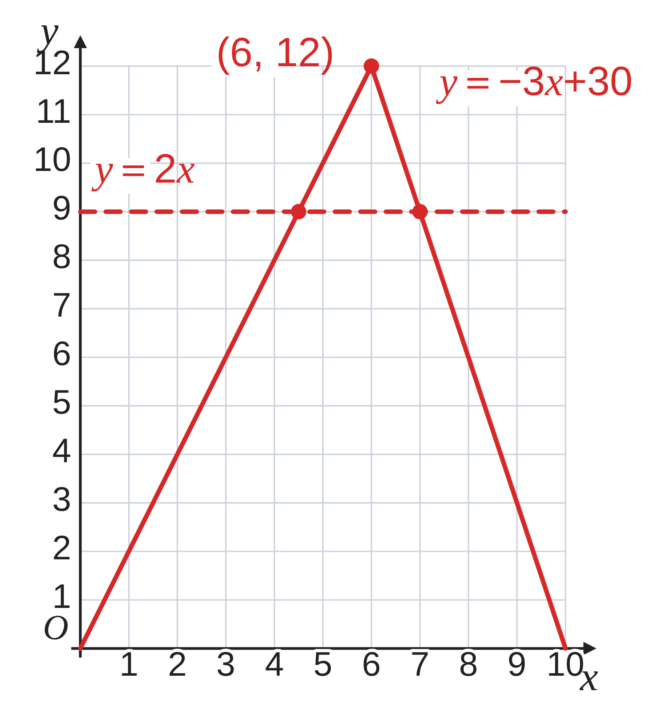
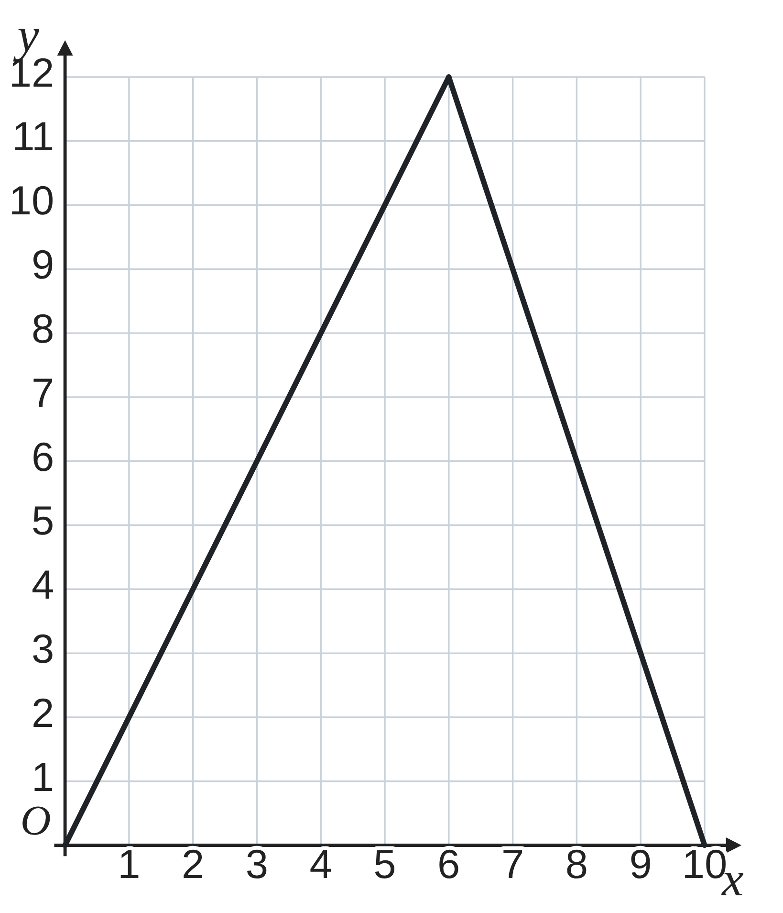

ペア学習
第16時 図形の中を動く点がつくる面積を調べよう
前の時間の重要語句を、ペアで出し合おう
第15時の重要語句から、1人1問ずつ、言葉を選んで出題する。
聞かれた人は、その言葉の意味を、自分の言葉で言う。
グラフの上下
交点
連立方程式で交点を求める
一次関数 第16時 図形の中を動く点がつくる面積を調べよう
めあて
第16時 図形の中を動く点がつくる面積を調べよう
図形の中を動く点がつくる面積を調べよう
学習課題


AB＝6cm、BC＝4cm の長方形 ABCD がある。
点 P は、A を出発して、毎秒 1cm で、辺 AB、BC の上を C まで動く。
x秒後の、三角形 APC の面積を y cm² とする。
（1）x＝3 のときと、x＝8 のときの y の値を求めよう。
（2）P が辺 AB 上、辺 BC 上にあるときの y を、x の式で表そう。x の変域も書こう。
一次関数 第16時 図形の中を動く点がつくる面積を調べよう
学習課題のまとめ
第16時 図形の中を動く点がつくる面積を調べよう
（1）
x＝3 のとき AP＝3cm
y＝1⁄2×3×4＝6
x＝8 のとき PC＝10−8＝2cm
y＝1⁄2×2×6＝6


（2）
辺 AB 上（0≦x≦6） AP＝x cm y＝1⁄2×x×4＝2x
辺 BC 上（6≦x≦10） PC＝(10−x) cm
y＝1⁄2×(10−x)×6＝−3x+30
一次関数 第16時 図形の中を動く点がつくる面積を調べよう
ことば
第16時 図形の中を動く点がつくる面積を調べよう
三角形の面積＝1⁄2× × 。
点が動くと、底辺や高さの長さが変わることがある。
点がどの辺の上にあるかで て、
それぞれの x の を決める。
一次関数 第16時 図形の中を動く点がつくる面積を調べよう
ことば
第16時 図形の中を動く点がつくる面積を調べよう
三角形の面積＝1⁄2×底辺×高さ。
点が動くと、底辺や高さの長さが変わることがある。
点がどの辺の上にあるかで場合を分けて、
それぞれの x の変域を決める。
一次関数 第16時 図形の中を動く点がつくる面積を調べよう
例題
第16時 図形の中を動く点がつくる面積を調べよう
x と y の関係を表すグラフを、
右の図にかこう。
また、y＝ になるのは、
P が出発して何秒後か。
学習課題で求めた式
辺 AB 上（0≦x≦6） y＝2x
辺 BC 上（6≦x≦10） y＝−3x+30

一次関数 第16時 図形の中を動く点がつくる面積を調べよう
例題 解答
第16時 図形の中を動く点がつくる面積を調べよう
グラフ
原点と点 (6, 12) を結ぶ線と、
点 (6, 12) と点 (10, 0) を結ぶ線
y＝9 になるとき
2x＝9 x＝9⁄2 （0≦x≦6 に合う）
−3x+30＝9 x＝7 （6≦x≦10 に合う）
9⁄2 秒後と、7秒後

一次関数 第16時 図形の中を動く点がつくる面積を調べよう
考えよう
第16時 図形の中を動く点がつくる面積を調べよう
点 P の速さを、毎秒 2cm に変えたとする。
x と y の関係を表すグラフは、どう変わるだろう。
①
P が B に着くのは何秒後か。
C に着くのは何秒後か。
②
y を x の式で表そう。x の変域も書こう。
③
新しいグラフを、右の図にかこう。
（もとのグラフは、かいてある）
④
もとのグラフとくらべて、気づいたことを書こう。
そのわけも説明しよう。

発展
演習まで解き終わった人は、考えてみよう！ 点 P が、A を出発して、辺 AD、DC の上を、毎秒 1cm で C まで動くとする。三角形 APC の面積 y を、x の式で表し、グラフをかこう。もとのグラフと、くらべてみよう。
一次関数 第16時 図形の中を動く点がつくる面積を調べよう
振り返り
第16時 図形の中を動く点がつくる面積を調べよう
今日のめあて
図形の中を動く点がつくる面積を調べよう
底辺・高さ
場合を分ける
変域
今日わかったことを、ペアで1つずつ言い合おう。
ワークシートと演習プリントを出そう。（未完成でも出す）
一次関数 第16時 図形の中を動く点がつくる面積を調べよう